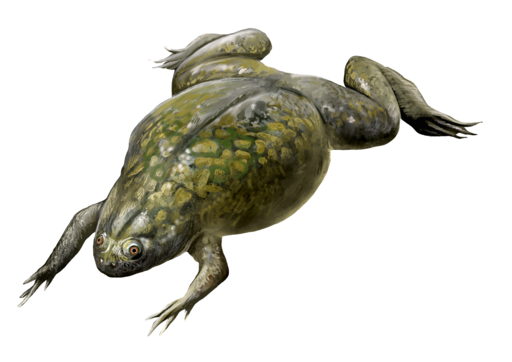

Frog Egg Cell Model

Figure 1: African Clawed Frog, Xenopus laevis
DataBase Center for Life Science (DBCLS), CC BY 4.0, via Wikimedia Commons
Xenopus laevis also known as African clawed frog is a species of African aquatic frog of the family Pipidae. All species of the family Pipidae are tongueless, toothless and completely aquatic. They use their hands to shove food in their mouths and down their throats and a hyobranchial pump to draw or suck things in their mouth. Pipidae have powerful legs for swimming and lunging after food. They also use the claws on their feet to tear pieces of large food. They have no external eardrums, but instead subcutaneous cartilaginous disks that serve the same function. They use their sensitive fingers and sense of smell to find food. Pipidae are scavengers and will eat almost anything living, dying, or dead and any type of organic waste. Xenopus eggs are a popular model system for a wide variety of biological studies for their ability to lay eggs throughout the year as well as its powerful combination of experimental tractability, relatively large size, and close evolutionary relationship with humans when compared to many other model organisms.

Figure 2: Xenopus Laevis eggs
Selles, J., Penrad-Mobayed, M., Guillaume, C., Fuger A., Auvray L., Faklaris O., Montel F., CC BY 4.0
Frog Egg Cell Cycle Model
In the African frog, egg cells undergo rapid cell division, providing a useful system for functionally analyzing and purifying the factors that drive a cell into mitosis. In fact, most of what we have learned about mitotic progression comes from early studies in frog eggs and frog eggs cytoplasmic extracts. During the rapid cell division of early frog egg, no cell growth occurs, so daughter cells from each cell division become halved in size. The cycle time is extraordinarily short, with the first cell cycle lasting only 75 minutes, followed by 11 synchronous cell cycles, each 30 only minutes long. Also, the cycle alternates between S and M phases without the intervening G1 and G2 phases due to its already inherited nutrients from the mother. Since frog egg is very large around 1mm in comparison to most cells; therefore, it is simpler to experiment on. Additionally, the newly fertilized egg cell passes through the cell cycle in synchrony which makes it easier to measure the activity of proteins that fluctuate in a cell-cycle dependent manner. Therefore there are multiple cells entering mitosis at exactly the same time during the last division which have around 2048 cells, making it easier to see the activity of certain proteins.
Reference
- Tang, Zhaohua Irene. "The Domino and Clock Models of Cell Cycle Regulation." Nature News, Nature Publishing Group, 2010, www.nature.com/scitable/topicpage/the-domino-and-clock-models-of-cell-14233440/.
- Borisuk, Mark T. "Bifurcation Analysis of a Model of the Frog Egg Cell Cycle." Thesis / Dissertation ETD, Virginia Tech, 1997. VTechWorks, vtechworks.lib.vt.edu/bitstream/handle/10919/29605/borisuk.pdf. Accessed 6 Feb. 2022.
 webmaster
webmaster{kind=link}